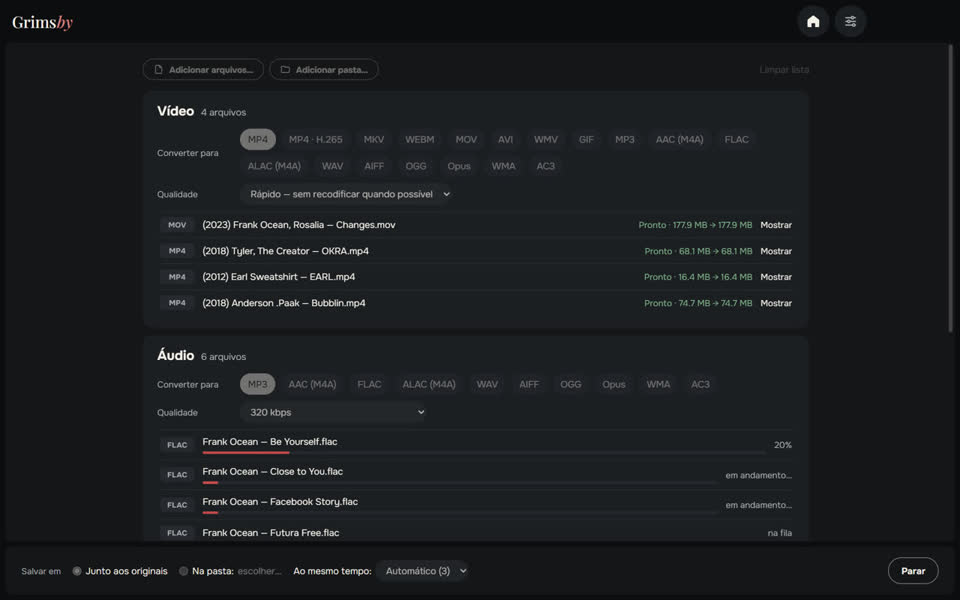
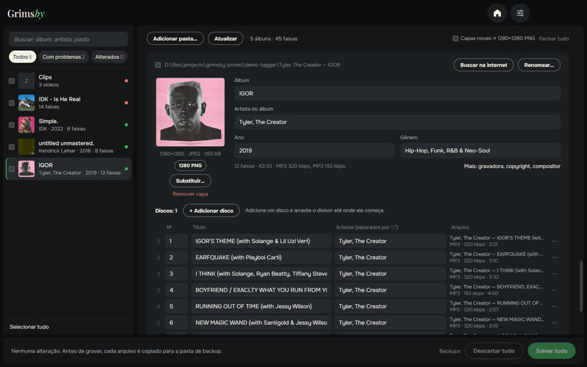

Três apps gratuitos e offline no mesmo estilo — para quem mantém a própria biblioteca de música.

Grimsby Player
Player offline para suas músicas e clipes baixados
Um player para quem baixa e coleciona música. Aponte a pasta de músicas e sua coleção vira uma biblioteca com cara de streaming: álbuns por ano, páginas de artistas e clipes ao lado dos álbuns. Tudo fica no seu computador — sem contas, sem assinaturas, sem anúncios.
- Álbuns por ano de lançamento e páginas de artista com álbuns, vídeos, shows e participações
- Clipes, shows e filmes de álbum vinculados automaticamente
- Reprodução sem pausas, nivelamento de volume e equalizador de 10 bandas
- Playlists de rádio inteligentes que se montam sozinhas
- Estatísticas de escuta e da coleção, estatísticas de álbum e retrospectiva do ano
- Conversor, localizador de duplicatas e verificação da biblioteca integrados

Grimsby Converter
Vídeo, áudio, fotos e documentos convertidos offline
Um conversor de arquivos que funciona no seu próprio computador. Arraste arquivos e pastas inteiras misturados: eles são separados em grupos, cada grupo com seu formato e qualidade, e tudo é convertido com um botão. Nada é enviado para lugar nenhum.
- Vídeo, áudio, fotos, documentos, planilhas e apresentações em uma só janela
- Pastas inteiras de uma vez, separadas em grupos automaticamente
- Modo rápido: MOV para MP4 em segundos, sem perder qualidade
- Dezenas de formatos: de áudio DSD e audiolivros M4B a PSD do Photoshop e Keynote
- Os originais ficam intactos; sem limite de tamanho, sem marca-d’água
- Vários arquivos ao mesmo tempo — quantos o processador aguentar


Grimsby Tagger
Editor de tags em lote: álbuns, capas, nomes de arquivos
Um editor de tags para sua biblioteca de música que trabalha por álbuns, não arquivo por arquivo. Aponte uma pasta: ele agrupa os arquivos em álbuns, mostra cada um como um cartão com a capa e destaca o que está errado. Corrija tudo e salve com um botão.
- Os álbuns se organizam sozinhos: discos, edições e arquivos soltos
- Problemas à vista: campos vazios, valores misturados, capas faltando, codificação quebrada
- Correções com um clique a partir dos nomes de arquivos e pastas
- Encontre o álbum na internet e associe as faixas aos seus arquivos
- Renomeie arquivos e pastas por modelo, com opção de desfazer
- Vídeos também: MP4, MKV, MOV e outros — tags e capas, sem recodificar
